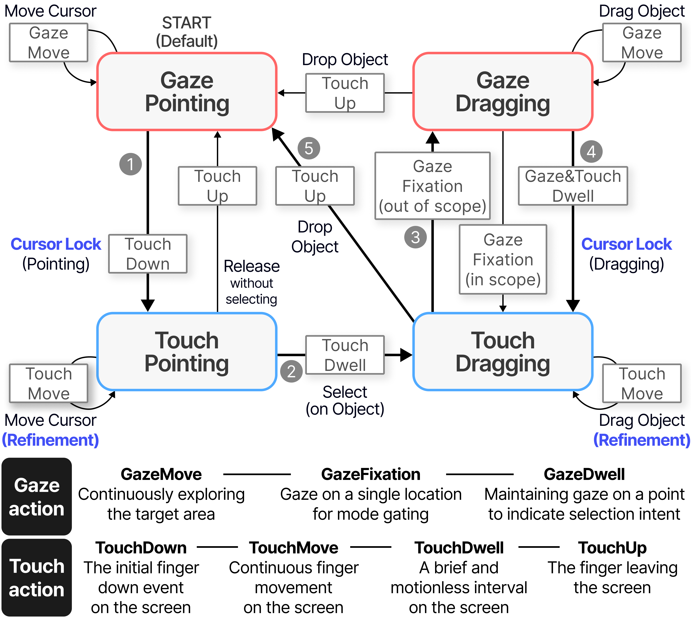
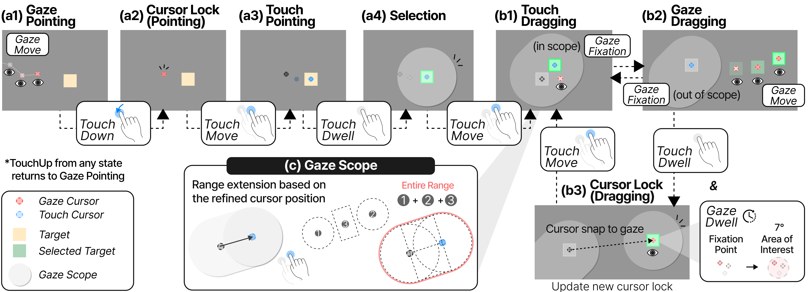
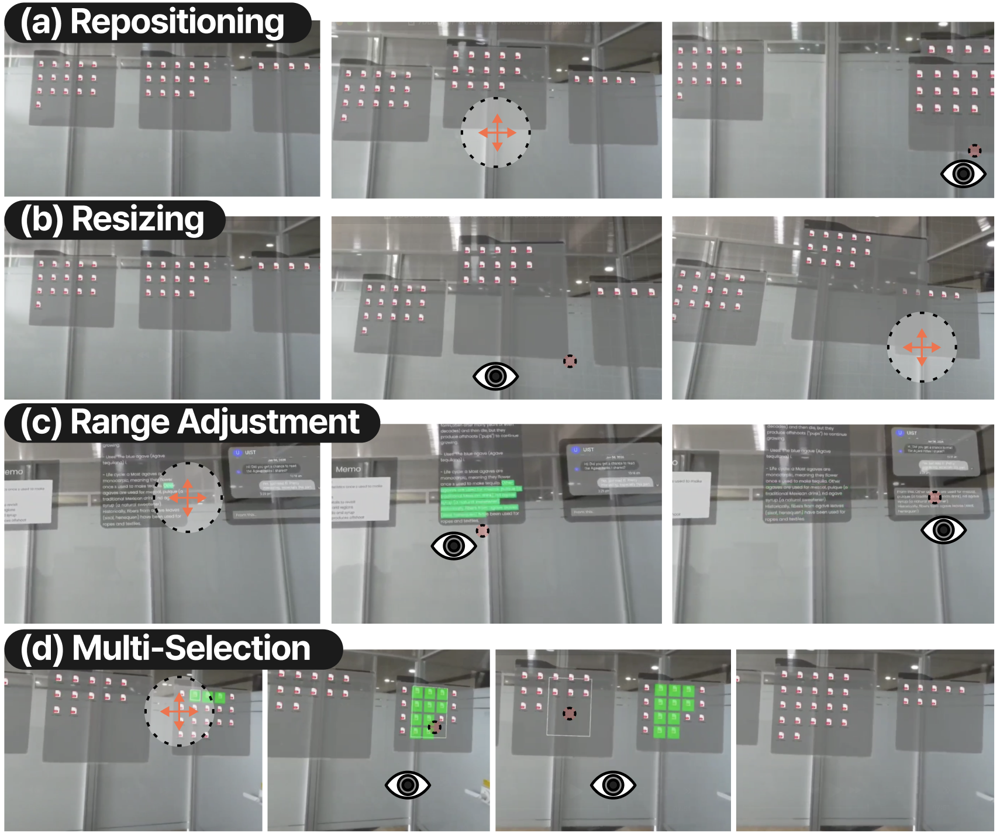

Eye gaze has become an essential input for spatial computing, but its coarse targeting and saccadic nature limit precision and complicate continuous interactions such as dragging, especially under user motion. Gaze+pinch has also become standard in XR for its convenience, yet mid-air gestures remain imprecise, fatiguing, and socially unacceptable. These limitations underscore the need for an approach that preserves the speed of gaze while enabling stable, fine control. We present GazeTune, a cascaded multimodal interaction technique combining gaze and touch to refine gaze-based selection and manipulation. Touch serves as a refinement channel within gaze pointing, allowing precise cursor and target control. Our work investigates how gaze-and-touch enhances dragging and mitigates Motion-Induced instability. In a study (N=20), we compared GazeTune against gaze-only and gaze-pinch methods in 2D dragging. Results show that GazeTune achieves significantly lower error with comparable execution time, validating its effectiveness and balanced trade-off between time and accuracy.


